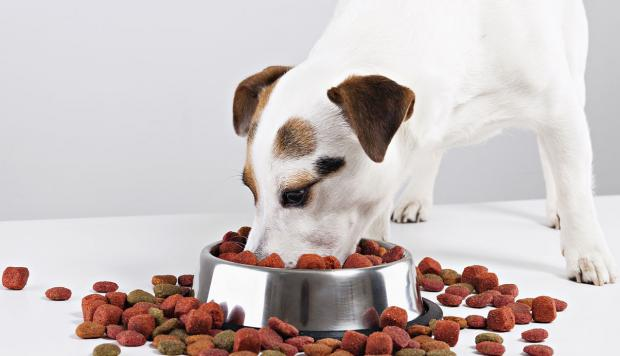

Una buena alimentación en los perros es básica para que nuestra mascota disfrute de buena salud. Hay varias opciones para elegir el alimento para perros de nuestra mascota, comida para perros casera o preparada. La elección de la comida para perros depende tanto de la raza del perro como del presupuesto y tiempo del que disponemos. Antes de tomar una decisión tenemos que preguntarle a nuestro veterinario, él nos recomendará cual es la opción más adecuada para nuestra mascota.
Las proteínas son básicas para la buena alimentación de nuestro perro; son los nutrientes y aportan los aminoácidos básicos así que deberemos proporcionarlas adecuadamente.
En primer lugar debemos saber que la alimentación del perro no debe basarse única o mayoritariamente en el consumo de carne o, en consecuencia, en el consumo de proteínas cárnicas. El perro es omnívoro y los alimentos vegetales le aportan una serie de proteínas que, indiscutiblemente, deben formar parte de su dieta.
Para mantener el equilibrio adecuado entre lo que necesita y la sobrealimentación, dale pequeñas cantidades de comida con frecuencia. Empieza con una cucharada de comida cinco veces al día mientras tu perrito todavía mama, y guíate por la siguiente pauta general:

- Desde el inicio de la alimentación sólida hasta el destete (normalmente dos meses): 4-6 comidas al día.
- De los dos a los tres meses: 4 comidas al día.
- De los cuatro a los seis meses: 2-3 comidas al día.
- Después de los seis meses: 2 comidas al día (dependiendo de la raza).
No atiborres a tu cachorro, ya que demasiada comida puede perjudicar su sistema digestivo o ejercer una presión innecesaria sobre su esqueleto si gana demasiado peso en un periodo corto de tiempo. Ninguna de estas dos cosas es buena para la salud de tu perrito, así que ten cuidado al planificar sus comidas.
Las recompensas de los perros suelen ser un elemento fundamental del adiestramiento canino. La mayoría de estos premios se basan en alimentos para perros cuya composición encanta a los canes, ya que son más sabrosos que la comida para perros habitual. No obstante, hay que vigilar su administración ya que suelen ser alimentos menos saludables y equilibrados, además de que corremos el riesgo de que se acostumbren a ellos y después no quieran seguir su dieta para perros habitual. Pero de vez en cuando si podemos premiar a nuestra mascota con alguno de estos alimentos:
- Galletas para perros
- Golosinas para perros
- Huesos para perros
- Croquetas para perros
